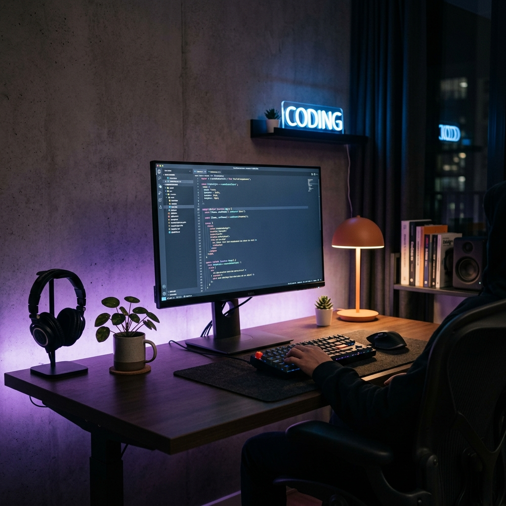

Technology
Scaling Frontend Architectures in 2026
A deep dive into how modular federation and signal-based state management are changing the way we build large applications.
Hi, I'm Alex. A passionate developer writing about coding, design, and everything in between.
A deep dive into how modular federation and signal-based state management are changing the way we build large applications.

Why great APIs, CLI tools, and documentation are essentially UX design problems, and how to approach them.
Maintaining open source projects can be challenging. Here are some strategies I use to avoid burnout and keep shipping.